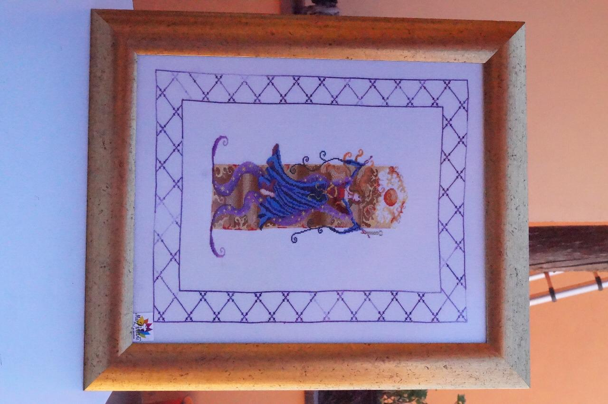
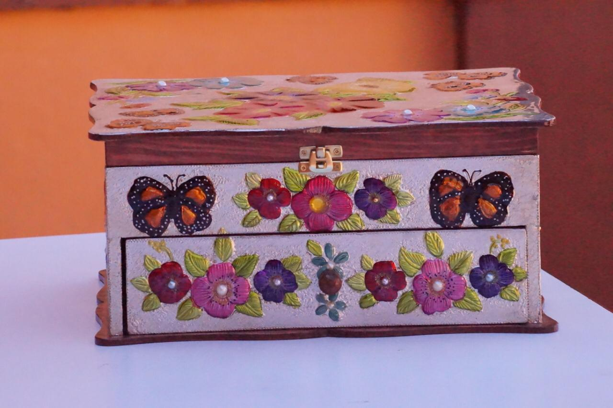
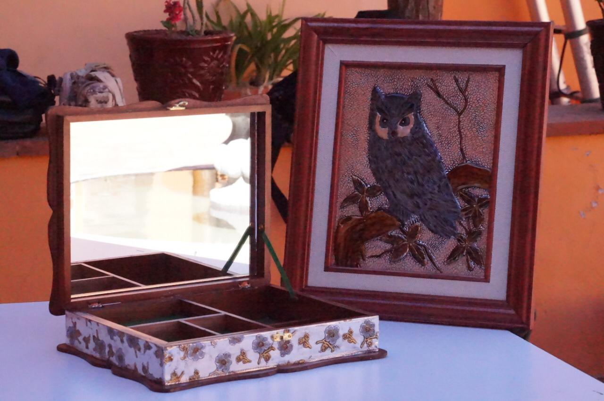
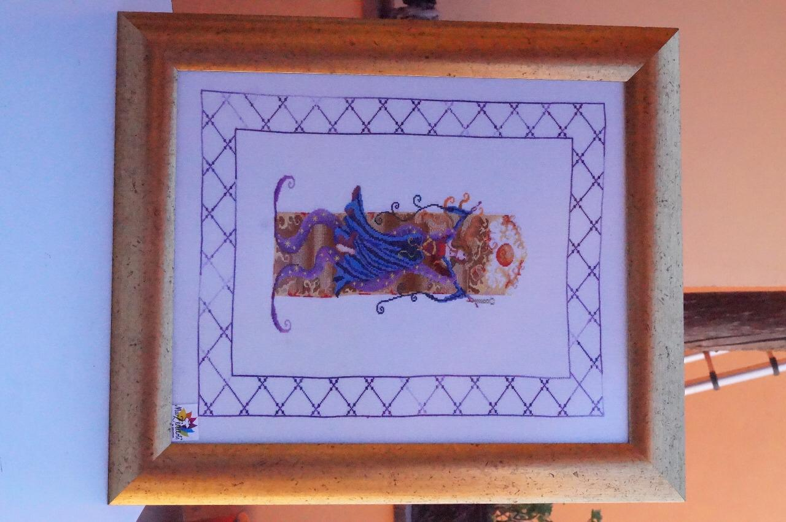
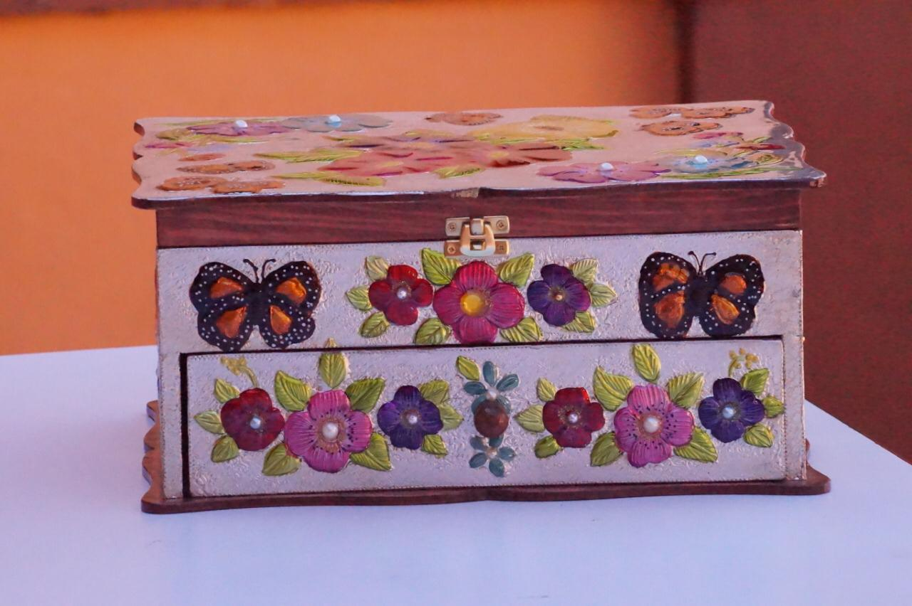
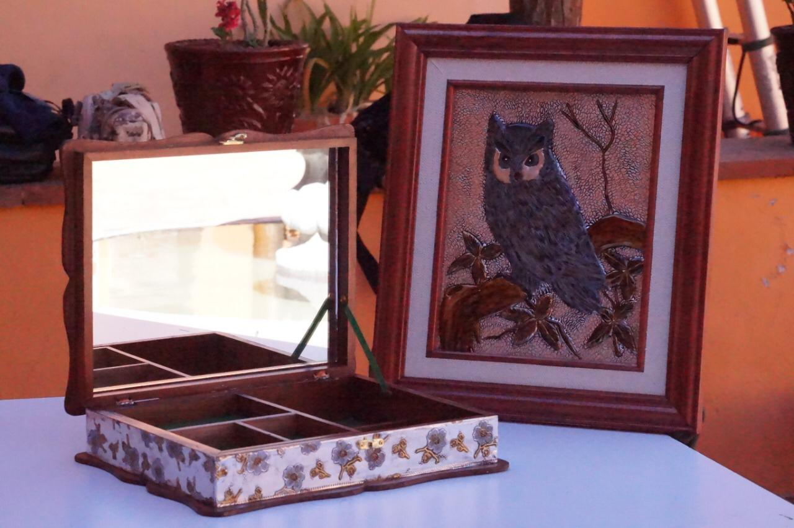

Repujado
Repujado
Madera trabajada en aluminio, pintada con una capa de
poliésteres. Repujado en aluminio con variante pintada,
encapsulada y adaptada en madera y vidrio. Contamos
con diferentes productos como son: cofres,portaretratos, cruces, separadores, tarjeteros, lapiceras,
libretas, repujados en forma de libros y mas.
 




